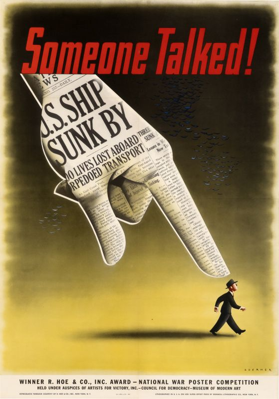
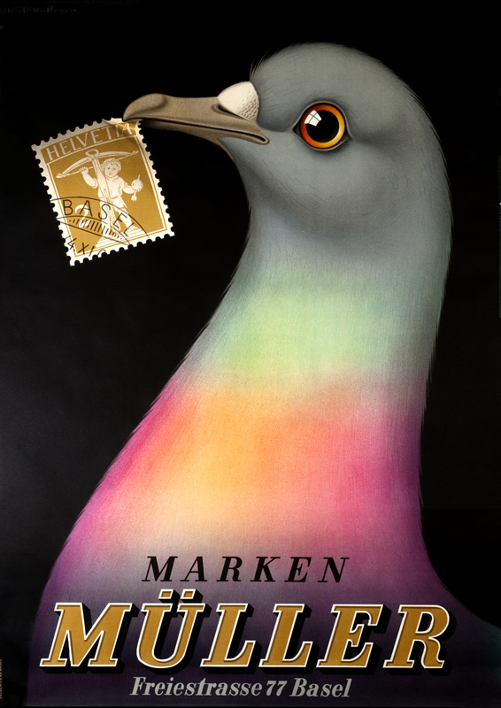
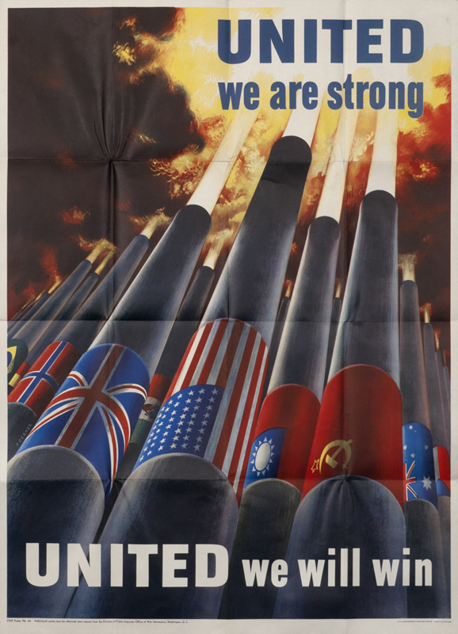
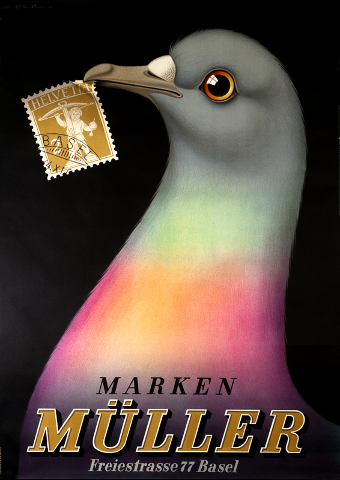
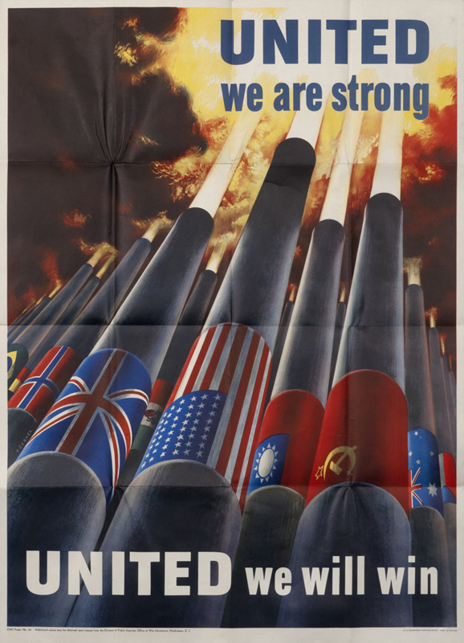
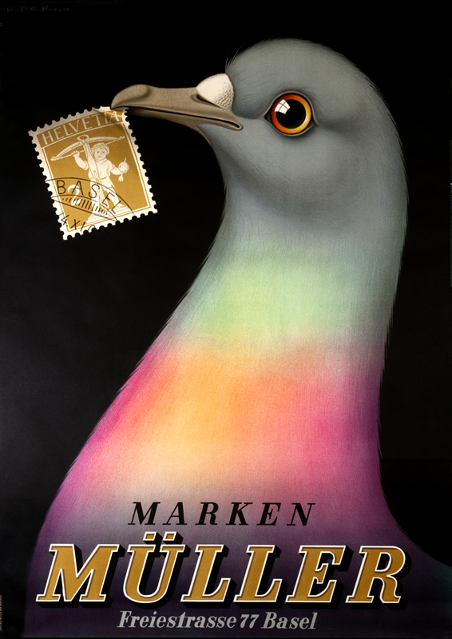
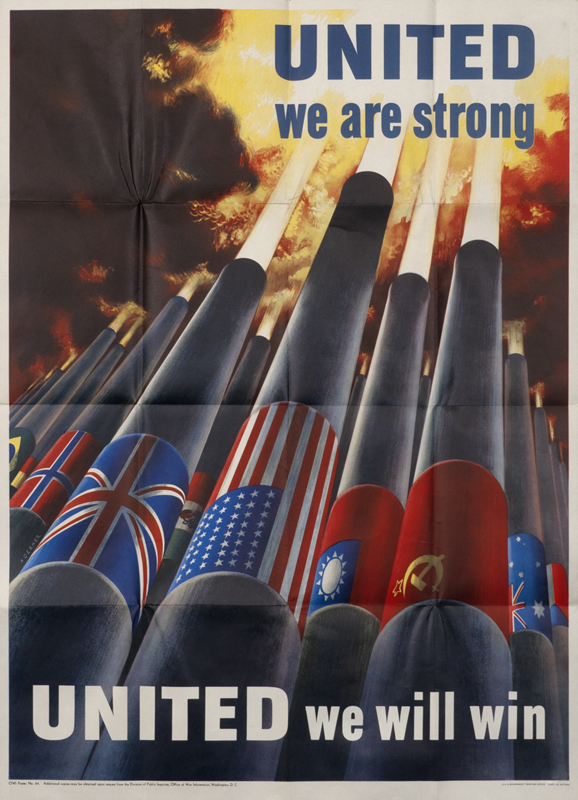
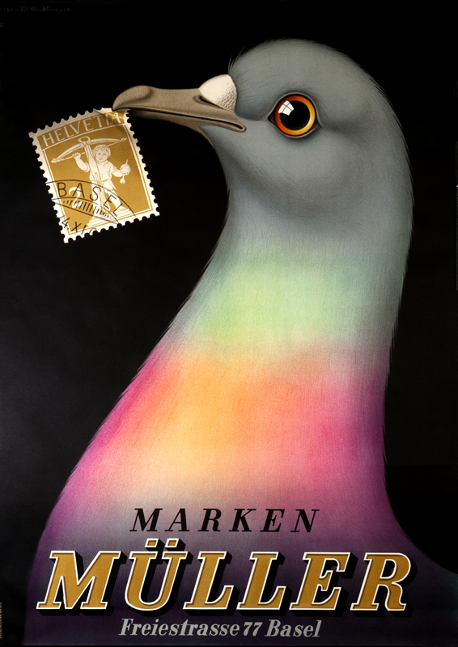
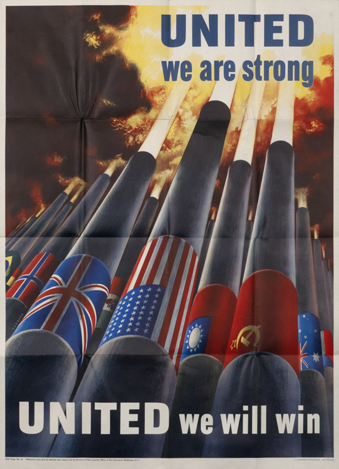

 





Жюль Шере вдыхает жизнь в постеры, делая их удобным инструментом для любого вида коммуникации в 1880. Отсюда и начнём. На радостях Шере создал 1000 постеров за свою трядцати летнюю карьеру.
Импрессионисты не стояли в стороне. Тулуз-Лотрек и его
Мулен Руж сделали постер предметом искусства.
Belle Époque = постерный ажиотаж. Муха подхватил тренд.
Каппиелло тоже нравился постер. В его интерпретации на
постере была фокус на один объект, привлекающий массу внимания. Папа современной рекламы, вот как все называют Каппиелло. Параллельно зарождается направление, в котором на постере доминируют абстракционизм и геометрические формы.
Первая Мировая война & Октябрьская революция. Постер = пропаганда.
Конец войны= индустриальная эпоха = никаких финтифлюшек. Кубизм. Футуризм. Экспрессионизм. Дадаизм. Первые курсы по графическому дизайну🤓🤓🤓


Новое применение многофункциональных постеров - агитация. Диагонали, фотомонтаж, резонансные цвета. Работы Родченко, Клуциса, братьев Стенберг сильно повлияли на западные постеры.
В середине двадцатых всё слилось в едином порыве. Направление Арт деко. Стиль, сила и скорость. Кассандр. Очень популярное направление.

2ая мировая война. У постеров новые конкуренты - радио и газеты. Позже-телевизор. Постеры приуныли.
2ая мировая война. У постеров новые конкуренты - радио и газеты. Позже-телевизор. Постеры приуныли.
Конец войны: бэби бум и рост экономики. И вновь постеры на коне. 2 отличающихся друг от друга стиля: консьюмерский и корпоративный. Консьюмерский = стиль 50ых, яркий и эксцентричный. Корпоративный = международный типографический стиль, был элегантным, рациональным и причёсанным. Стиль 50ых аппелировал к широкой аудитории и создавал имидж брендов, основные лица Люпен, Брун, ранд и савиньяк. Международный типографический стиль отличался структурированным дизайном, придавая порядок и систему сообщению. часто использовались фотографии.
Середина 60ых. На постеры влияют сюрреализм, поп арт и экспрессионизм. Революция и хаос.
70-80ые Постмодернизм. Свержение корпоративного стиля. Сложный дизайн из многих элементов, хаотичный и спонтанный.
90ые постеры важное средство коммуникации, которое плавно интегрируется в диджитал и пр.